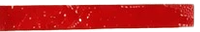
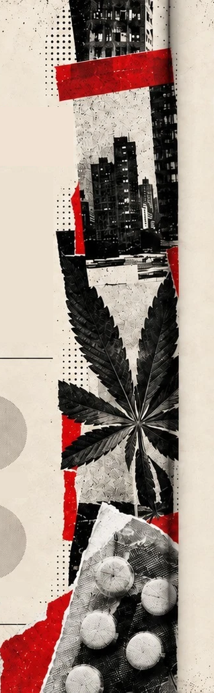
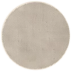
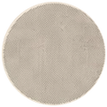
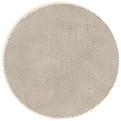
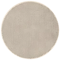
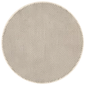
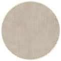

UMA REVISTA PARA OLHAR ALÉM DA SUBSTÂNCIA
A Sob Efeito investiga as drogas para além dos
efeitos sobre o organismo. Reunimos dados,
história e Sociologia para entender como o consumo
se transforma e por que danos, proteção e punição
se distribuem de maneira desigual.
O editorial apresenta nossa posição. Nas reportagens,
diferenciamos resultados de pesquisas, interpretações
e propostas. Consumo, dependência, situação de rua
e envolvimento criminal não são sinônimos.
EQUIPE
-

Adriel de Mouranº 01
-

Anna Luisa Abreunº 02
-

Enzo Motanº 06
-

Guilherme Guedesnº 10
-

Julio Cesar Pereiranº 15
-

Pedro Henrique Senanº 20
2º ano F. 2026
Português · Sociologia · Inglês · UX · Análise estatística
SUMÁRIO
- 01Capa
- 02Apresentação e equipe
- 03Mesma dose, outro peso (editorial)
- 04O que é e de onde vem
- 05Como chegamos até aqui?
- 06Mercado mundial e consumo
- 07Brasil: dados e realidade
- 08Álcool: legalidade e julgamentos
- 09Cracolândia: formação e contexto
- 10Permanecer na cena
- 11Classe, raça e sistema penal
- 12Seis olhares da Sociologia
- 13Cidade 2000 e Cachimbo da Paz
- 14O que dizem os dados (PeNSE)
- 15Adolescência por idade e gênero
- 16Prazer, dependência e riscos
- 17Respostas: prevenção e cuidado
- 18Conclusão: sob efeito de quê?
- 19Fontes e referências
- 20Contracapa